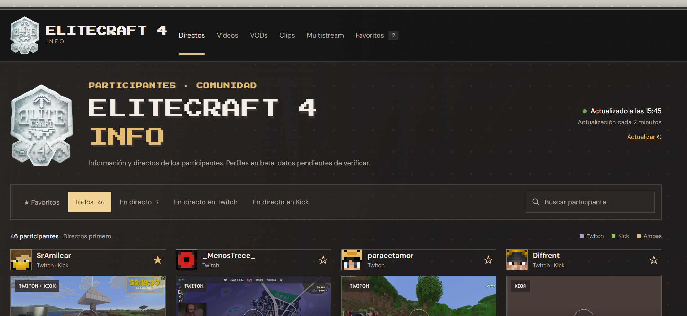

02 / PROGRAMACIÓN · 20 NOV 2026
Página fan-made de EliteCraft 4
Una página fan-made para reunir información de EliteCraft 4 y tener a mano sus retransmisiones y novedades.

Seguir la serie
Hice esta página para tener los directos y las novedades de EliteCraft 4 en un mismo sitio, ya que me gusta ver la serie mientras hago diferentes cosas, y a veces es complicado quien esta en directo. Tras la viralidad que cogió en twitter, amplie las funciones con peticiones de los usuarios, la web esta en fase beta y la ire actualizando poco a poco.Es una web hecha por un fan de la serie.
Cómo funciona
La página esta hecha en html, css y java script,consulta las novedades mediante APIs y está publicada en Vercel.